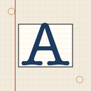

Auscultrix
Presence
tre piccoli gesti — apri
How are you, really?
O preferisci un'immagine? apri e scegline una
Non esce da questo computer — promesso.
Il tuo momento di cura
La tua musica suona su YouTube
Collezione
Da dove viene
Dove è uscita la canzone
La Visione è una finestra lenta: paesaggi calmi a tre fotogrammi al secondo. Le sue immagini restano sotto le soglie WCAG di lampeggiamento; il video di YouTube sottostante non dipende da Auscultrix.
Paesaggio sonoro
Una composizione generata qui, sul tuo computer, che parte da come stai e si sposta piano. Nessuna rete, nessun brano altrui.
Per chi compone esporta audio, partitura e patch
Stesso stato, stesso seme, stessa composizione: puoi archiviarla, analizzarla o rifarla in Pure Data.
Le tue cose
Quello che condividi resta su questo computer — niente server, niente estranei. Cancella tutto quando vuoi.
I numeri della mappa
Cosa esce dal computer: niente di quello che scrivi.
Se lo attivi, titolo e artista dei brani proposti vanno a lrclib.net per leggerne i testi.
Vieni a salutarmi